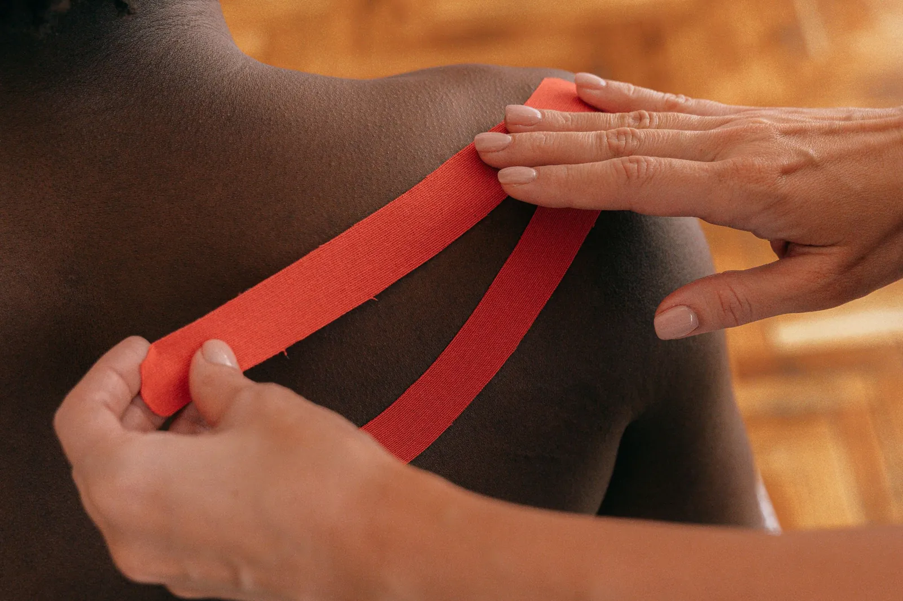

Kinesiology taping places a stretchy strip on the skin after we have watched how you move. Direction and stretch are chosen for that day, and the joint is supposed to keep bending. Cloth tape wrapped to keep a joint quiet is a different tool. In West Georgetown the strip is one part of a chiropractic visit. It is not a result, and it is not something we hand you to sort out in the parking lot.

Colored strips are easy to oversell. This page says what the tape is, when we even consider it for someone in West Georgetown, what happens in the room, and what a performance study cannot promise you.
What is kinesiology taping?
It is a cotton strip that lengthens, with a sticky side that has to meet bare skin. Lotion, oil, sweat, and hair are the usual reasons it lets go early. Nothing goes over a break in the skin or a rash. Shape, direction, and stretch are decided in the room, not copied from a picture online. A light application is mostly something you notice when you change position. A firmer one aims at a little steadiness while a knee, a shoulder, or the low back still works. A tug as it goes on is expected. A sting is not, and a sting ends it.
Wear time is not a number we can print. The roll in the cabinet, your skin, and rubbing from a strap or a seatbelt all change it. We name the product, say whether water is a problem for that roll, and show the removal: peel the strip back on itself while the other hand holds the skin.
Who is it for?
People in West Georgetown and across West Georgetown, TX usually bring a week they still have to finish. They want the joint available for that week. We talk about tape after the exam, not before it.
- Someone who wants a little steadiness for a shift, a practice, or a day on their feet, and still has to bend.
- A shoulder, a knee, or a low back that feels unsteady in one part of its range, alongside hands-on care.
- A return to a hobby or a sport, once the first angry day has passed, while the rest of the plan does the work.
- A person whose last wrap held the joint so still that the job or the sport became impossible.
- A question about puffiness or a bruise, and only on intact skin. We do not promise the tape will change swelling.
We do not tape a rash, a tear in the skin, or a spot that has reacted to sticky dressings. We do not tape when swelling hides the joint, when a fall is still fresh, or when numbness, a joint that will not bear weight, or worsening weakness needs a physician first. If a strip would only decorate a problem we have not looked at, it stays in the drawer.
What does a visit involve?
We start with work, sport, and the task that has to happen this week, then we watch the motion that provokes the area. Tape comes out only after that. A history that calls for a physician, or for no tape, is a finished answer. Applying a strip takes a few minutes, with you in the position it was cut for. You leave wearing it, and you may take it off the moment it bothers you.
Hold the skin and fold the strip back on itself. Do not rip it off later. Next visit, the skin is inspected before another strip is suggested. Pink that fades after a slow peel can happen. A blister, a spreading rash, or itch that wrecked your night means we stop. If the strip fell off, got in the way, or might as well not have been there, we change the approach or we quit. There is no block of applications waiting at the door.
How does it fit with the rest of your care?
The strip does not replace an adjustment, and it does not replace how you sit, lift, and train after you leave. Hands-on care is for a joint that is not moving well. Tape, when it is used, is something on the skin until the next visit. Other work is added only when this office offers it and the exam supports it. We will not cover skin we have not assessed just because a strip is quick.
A joint that has to stay quiet needs a different approach, and we will say so. You can refuse the tape or have it removed before you stand up. Leaving without a strip does not leave the plan unfinished.
What does care cost, and do you take insurance?
No referral is needed to book a first visit. Fees are TBD until we walk through them with you. Whether insurance helps is also TBD until your specific plan is looked at. We will not guess a copay or a total from this page. Whether the tape is billed with the visit or beside it depends on the plan, and that number is one you hear before anything is applied.
- No referral needed to book a first visit.
- Fees are TBD until we go over them with you, before anything begins.
- Coverage under your plan is TBD. We do not guess what insurance will pay.
We cannot promise a specific result, a timeline, or what your insurance will cover. Every plan, every skin, and every joint is different. What we can promise is an honest look and a straight answer before you commit.
comparisons favored kinesiology tape for sports performance in healthy athletes. Reneker and colleagues reviewed 15 randomized studies and 193 comparisons of kinesiology tape against other tape or no tape. Eleven showed a significant difference: 2 favored kinesiology tape, 8 favored Mulligan tape, and 1 favored no tape. Their conclusion was a lack of compelling evidence that kinesiology tape improves sports performance. Those figures are not a pain score, and they are not a forecast for anyone in West Georgetown.
Source: Reneker JC, Latham L, McGlawn R, Reneker MR. Effectiveness of kinesiology tape on sports performance abilities in athletes: a systematic review. Physical Therapy in Sport. 2018;31:83-98.Why patients choose this care
- The joint can still bendA stretchy strip, placed so you can move, rather than a wrap meant to keep a joint quiet.
- After the exam, not instead of itWe watch the motion and check the skin first. Tape is added only when that look supports it.
- Easy to refuse or removeYou can skip it, and a strip that itches comes off. It is not a package of visits.
How it works
- History, then the motionWhat this week requires, and the movement that stirs the area, before any tape is cut.
- Skin, looked at firstBare, dry skin. No lotion. Nothing over a rash, a break, or a spot dressings have bothered.
- A few minutes onDirection and stretch chosen that day. A tug is fine. A sting means it comes off before you leave.
- You leave with the rulesWhether this roll can get wet, when to remove it, and how to peel it without tearing skin.